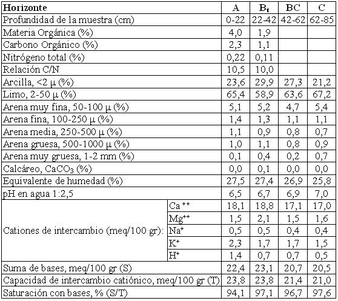

Argiustol típico, franca fina, mixta, térmica
Capacidad de uso: IIIec
Este suelo se ha desarrollado a partir de sedimentos loéssicos de textura franco limosa, en situaciones relativamente altas del relieve incluyendo depósitos eólicos profundos o como cobertura de abanicos, conos y cerrillos. La situación en el relieve ha impedido la influencia fluvial posterior o más reciente a la depositación del loess, de manera que éste se encuentra en su forma más pura. La pendiente normalmente se encuentra entre 0,3 a 1%. Presenta un horizonte A o capa arable de 22 cm de espesor de textura franco limosa con 23% de arcilla y 65% de limo, prácticamente sin arenas gruesas. Sigue hacia abajo un horizonte subsuperficial enriquecido en arcillas iluviales (Bt) de textura franco arcillo limosa y 30% de arcillas con estructura en prismas, se extiende hasta 42 cm. Luego de una transición (horizonte BC), el material parental del suelo se encuentra a 62 cm, es franco limoso con 21% de arcilla. El material calcáreo pulverulento comienza a 85 cm de profundidad (Ck).
Descripción del perfil típico:
El perfil representativo de esta Serie fue descrito a 4 km al Sur del paraje homónimo, departamento Ischilín, provincia de Córdoba.
A 0-22 cm; color en húmedo pardo grisáceo muy oscuro (10YR3/2); franco limoso; estructura en bloques subangulares medios moderados; friable en húmedo; ligeramente plástico; ligeramente adhesivo; pH 6,5; raíces muy abundantes; límite inferior claro, suave.
Bt 22-42 cm; color en húmedo pardo oscuro (10YR3/3); franco arcillo limoso; estructura en prismas irregulares medios moderados; friable en húmedo; plástico; ligeramente adhesivo; pH 6,7; barnices comunes de arcilla y humus; raíces comunes; límite inferior gradual.
BC 42-62 cm; color en húmedo pardo a pardo oscuro (7,5YR4/3); franco arcillo limoso a franco limoso; estructura en bloques y prismas débiles; friable en húmedo; ligeramente plástico; ligeramente adhesivo; pH 6,9; escasos barnices arcillosos finos; vestigios de raíces; límite inferior gradual.
C 62-85 cm; color en húmedo pardo a pardo oscuro (7,5YR4/4); franco limoso; masivo; ligeramente plástico; no adhesivo; pH 7; límite inferior abrupto ondulado.
Ck 85 cm a +; color en húmedo pardo a pardo oscuro (7,5YR4/4); franco limoso; masivo; pH 8,2; moderada reacción al ClH en la masa del suelo.
Cuadro Nº25
Datos analíticos Serie MACHA
Situación: Latitud: 30º36’S Longitud: 64º07’O Altitud: 650 m.s.n.m.

|